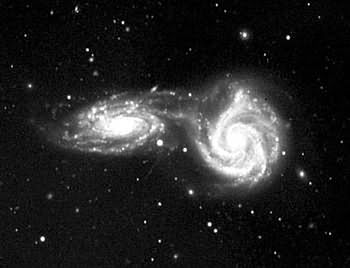

i050801
TROST
InfoNote
System Lifecycle
Collisions
NGC 5426/27 Collision
|
|
i050801
TROST
InfoNote |

NGC 5426/27 photo credit: Vera C. Rubin (1977), used with permission
- Observatory:
- Cerro Tololo Inter-American Observatory
- Telescope:
- Blanco 4-meter prime focus; plate #3091
- Date:
- 1977 March 20/21
- Exposure:
- 90 minutes
- Image:
- baked IIIaJ emulsion on glass plate,
13mm major extent of image- Filter:
- 385
- Seeing:
- 2-3 arc seconds
- Sky:
- clear
- Developed:
- D-19 x5.5 min @ 68 degrees F.
1.1 This striking image is an appealing illustration of colliding spirals at the cosmic level. Although it is rare for individual stars to collide as galaxies intersect, gravitational tidal forces impact both galaxies, seen in the apparent joining and trailing of stellar streams and cosmic material, including the formation of new stars.
1.2 The image serves as a visual metaphor for
- different (spiraling) lifecycle levels in the creation and adoption of computer and information systems
- distinct conceptual frameworks inhabited by practitioners in their separate universes of practice
- bridging the gap, with new understandings and opportunities that arise in the fusion
2.1 Think about the science, the technology, the engineering, and all of the contributors that have the cosmos appear to stand still for 90 minutes, long enough for photons that have traveled in excess of 100 million years to provide a snapshot on an area about one quarter that of a 35mm negative.
2.2 Think about the difference between theory and practice in a chain of transformations and processes that surrender a persistent record of the image in a developed emulsion of silver-based particles on a flat glass substrate.
2.3 Think about the care shown by scientists in checking, correlating, capturing, and preserving experimental results in ways that allow the work to be reviewed, repeated, and scrutinized. Think of the record's existence as evidence in testing theories about processes that engulf us here, now, and are best recognized at great distances in what consistently appears to be the distant past of the universe.
2.4 Think about scientific integrity and trustworthiness. Think about that in fostering human institutions that are built to last. Think about that in terms of reliable results from unreliable parts and fallible participants.
— Dennis E. Hamilton
2005 August 12
- Rubin, Vera C. (1977)
- NGC 5426/27. Astronomical image. Cerro Tololo 4-meter telescope, plate #3091, Cerro Tololo Inter-American Observatory, Chile, March 20/21 1977.
- Rubin, Vera C. (2005)
- NGC 5426/27 image details and permission. Personal e-mail communications, 2005 August 9, 12. [Note: this image is not part of the covered work for which the Creative Commons license is provided.]

|
created 2005-08-09-21:10 -0700 (pdt) by
orcmid |